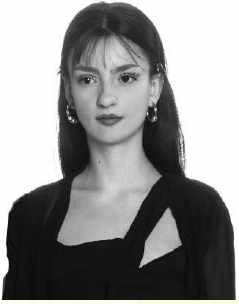

Buğlem Çinçin is a fashion designer based in Istanbul: a multidisciplinary designer and maker with a background specialising in handbags and upcycled fashion, and a fashion AI visual and video creator.
She holds a bachelor's (2016–2020) and a master's degree (2020–2023) in Textile and Fashion Design from Marmara University.
Designer at Lems Studio (2019–2026), creating bags, notebooks, sketchbooks and other accessories. Fashion designer at Magnezyum (2020–2024), designing upcycled clothing and 3D fashion. Research assistant in Textile and Fashion Design at Doğuş University (2023–2025).
Selected work
Magnezyum — upcycled fashion
Lems Studio — bags and accessories
Epic Venue — collective project: product design, photography, styling
Good Root Istanbul
Accessory design
Fashion design
Upcycled fashion
Print, weave and knit development
Branding
Fashion marketing
AI visual and video generation
English and Turkish.
Available for freelance projects and collaborations.
All work on this website by Buğlem Çinçin: prints, fabrics, garments, collections and images.